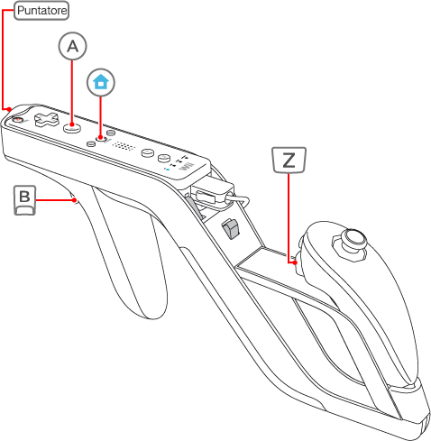

7 |
Comandi |
 |
|
Per migliorare l'esperienza di gioco, inserisci il telecomando Wii e il Nunchuk™ nel Wii Zapper™. A ogni modo, puoi giocare anche senza il Wii Zapper, tenendo il telecomando Wii in una mano e il Nunchuk nell'altra. Indipendentemente dalla configurazione scelta, i comandi dei vari pulsanti restano invariati.

Nota: puoi invertire le funzioni di
 e e  nello schermo opzioni. nello schermo opzioni.

L'azione di mirare con il Wii Zapper orientandolo verso lo schermo viene chiamata "puntare". |
 |
 |
 |